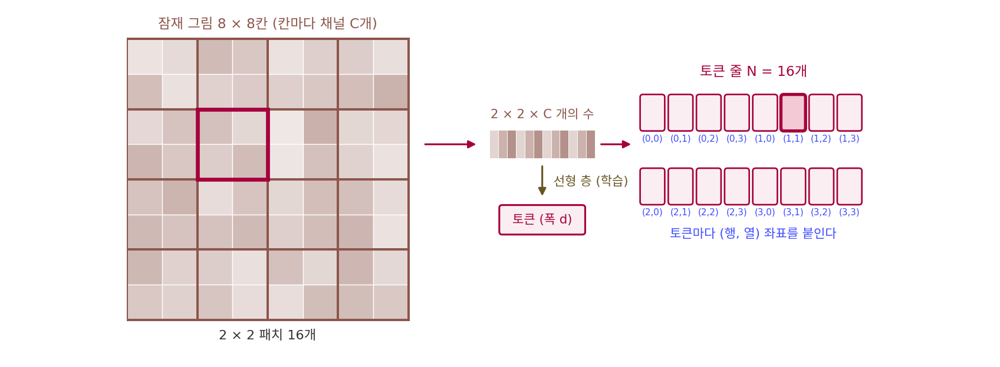

패치: 잠재 그림을 토큰 줄로 자르기
트랜스포머에게 문장은 토큰의 줄이고, 토큰 하나는 벡터 하나다. 잠재 그림도 줄로 펴 넣을 수 있다. 1024 × 1024 그림을 FLUX.1 의 VAE 로 줄이면 가로세로가 8분의 1인 128 × 128칸, 칸마다 16개의 수(채널 16)를 가진 잠재 그림이 된다. 칸 하나를 토큰 하나로 삼으면 토큰이 16,384개다. 셀프 어텐션은 토큰마다 다른 모든 토큰과 견주므로, 머리 하나가 층 하나에서 견주는 (질의, 열쇠) 쌍이 16,384² = 268,435,456개다. 이것을 블록 수십 개, 걸음 수십 번 되풀이해야 한다. 압축기가 더 세게 줄이면 되살린 그림이 무너진다. 줄이는 일을 신경망의 첫 층에서, 칸을 몇 개씩 묶어 토큰 하나로 만드는 것으로 하면 어떨까?
역사: 그림 한 장은 16 × 16 낱말
그림을 칸 묶음으로 잘라 트랜스포머에 넣은 것은 그림 분류에서 먼저였다. 2020년 구글의 도소비츠키(Alexey Dosovitskiy)와 동료들은 논문 제목을 「그림 한 장은 16 × 16 낱말의 값어치가 있다(An Image is Worth 16x16 Words)」로 붙였다. 그전까지 그림 인식에 어텐션을 쓰는 연구는 합성곱 신경망 안에 어텐션을 끼우거나, 합성곱의 일부를 어텐션으로 바꾸는 쪽이었다. 이들은 합성곱을 빼고, 그림을 16 × 16 픽셀 조각으로 잘라 조각 하나를 낱말 하나처럼 다루는 트랜스포머(ViT, Vision Transformer)만으로도 큰 자료로 미리 학습하면 좋은 합성곱 신경망에 맞먹는다고 보고했다. 합성곱이 처음부터 갖고 들어가는 「이웃 칸끼리 관계가 깊다」는 가정을 덜어 낸 대신, 자료가 많으면 그 관계까지 배운다는 쪽에 건 셈이다.
2022년 말 UC 버클리의 피블스와 뉴욕대의 셰는 같은 생각을 잠재 디퓨전에 가져왔다. Stable Diffusion 의 VAE 로 256 × 256 그림을 32 × 32 × 4 잠재 그림으로 줄이고, 그 잠재 그림을 조각으로 잘라 트랜스포머에 넣었다. 이것이 디퓨전 트랜스포머(Diffusion Transformer, DiT), 곧 트랜스포머로 짠 잡음 예측 신경망이다. 조각 한 변을 8, 4, 2칸으로 바꿔 가며 견주었는데, 이 장 뒤에서 그 결과를 숫자로 읽는다.
칸을 묶어 토큰으로
잠재 그림이 한 변 n칸, 칸마다 C개의 수라고 하자. 한 변 a칸짜리 정사각형 조각, 곧 패치 (칸 묶음 조각 / patch)로 겹치지 않게 자르면 조각은 (n/a)²개이고, 조각 하나에는 a × a × C개의 수가 들어 있다. 이 수들을 한 줄로 펴서 선형 층 하나에 통과시키면 트랜스포머의 폭 d짜리 토큰 벡터가 된다.
패치 한 변 a는 독자가 익숙한 글자 p 대신 a 로 적었다. 디퓨전 논문들은 p 로 적지만, 이 책에서 p 는 분포 이름이라 같은 쪽에서 섞이지 않게 했을 뿐 뜻은 같다.
128 × 128 × 16 잠재 그림에 a를 바꿔 넣어 보자.
| 패치 한 변 a | 토큰 수 N | 토큰 하나의 수 | 어텐션 쌍 (머리 하나, 층 하나) |
|---|---|---|---|
| 1 | 16,384 | 16 | 268,435,456 |
| 2 | 4,096 | 64 | 16,777,216 |
| 4 | 1,024 | 256 | 1,048,576 |
| 8 | 256 | 1,024 | 65,536 |
한 변을 두 배로 키우면 토큰은 4분의 1, 어텐션 쌍은 16분의 1이 된다. 그 대신 토큰 하나가 맡는 칸이 넓어진다. 토큰 하나는 블록을 지나는 동안 벡터 하나로 다뤄지므로, 너무 넓게 묶으면 조각 안의 가는 결을 폭 d짜리 벡터 하나에 눌러 담아야 한다.
잘라서 줄로 펴면 잃는 것이 하나 있다. 어느 조각이 어디에 있었는지다. 셀프 어텐션은 토큰의 순서를 바꿔 넣으면 출력도 같은 순서로 바뀔 뿐이라, 위치를 따로 알려 주지 않으면 맨 위 조각과 맨 아래 조각을 가르지 못한다. 그래서 조각마다 좌표를 붙인다. DiT 는 행과 열을 사인 인코딩로 펴서 토큰에 더했고, 요즘 모델은 질의와 열쇠 벡터를 좌표만큼 돌리는 회전 위치 인코딩(RoPE)를 쓴다. 이때 머리 하나의 벡터를 몇 토막으로 나눠 토막마다 좌표축 하나를 맡긴다. FLUX.1 은 머리 하나의 128개 수를 16 + 56 + 56으로 나눠 (번호, 행, 열) 세 축을 맡겼다(ComfyUI comfy/ldm/flux/model.py 의 axes_dim).

위젯에서 그림 크기와 패치 한 변을 바꾸면 토큰 수, 토큰 하나의 수, 어텐션 쌍이 바뀐다. 그림 크기를 두 배로 키울 때와 패치 한 변을 절반으로 줄일 때 어텐션 쌍이 같은 비율로 늘어나는지 보자.
ML에서: 1024 × 1024 그림은 어느 모델에서나 토큰 4,096개
이 장에서 견줄 모델들의 설정을 ComfyUI 코드에서 읽으면, 1024 × 1024 그림 한 장이 모두 토큰 4,096개가 된다. FLUX.1, Qwen-Image, Z-Image, Krea 2, Anima 는 가로세로 8분의 1, 채널 16인 잠재 그림을 2 × 2 패치로 자른다. FLUX.2 는 VAE 쪽에서 미리 2 × 2칸을 채널로 접어, 가로세로 16분의 1에 채널 128인 잠재 그림을 패치 한 변 1로 넣는다(comfy/latent_formats.py 의 Flux2, comfy/model_detection.py). 어느 쪽이든 픽셀 16 × 16칸이 토큰 하나다. 영상 모델은 같은 자르기에 시간 축을 하나 더한다. Anima 의 몸통은 NVIDIA 의 영상·그림 생성 모델 Cosmos-Predict2 를 바탕으로 해서, 그림 한 장도 (시간, 행, 열) 세 축의 좌표를 받는다.
문제 4. 모자이크 벽 옮기기
가로 48장, 세로 32장의 타일로 된 모자이크 벽을 다른 건물로 옮긴다. 타일을 가로세로 4 × 4장씩 상자에 담는다. (가) 상자는 몇 개이고, 상자 하나에 타일은 몇 장인가? (나) 상자를 2 × 2장짜리로 바꾸면 상자는 몇 개인가? (다) 옮긴 뒤 다시 붙이려면 상자마다 무엇을 적어 두어야 하는가?

(가)는 48 ÷ 4 = 12, 32 ÷ 4 = 8이라 상자 96개, 상자 하나에 16장이요. (나)는 한 변을 반으로 줄였으니까 상자도 두 배, 192개요.

상자 한 변을 반으로 줄이면 가로로 몇 개, 세로로 몇 개가 되죠?

가로 24개, 세로 16개요. 384개네요. 가로도 두 배, 세로도 두 배라 네 배였어요.

(다)는 상자에 「몇째 줄 몇째 칸」을 적어야 해. 상자 속 타일 16장은 서로 붙어 있으니 상자 안의 순서는 그대로 남지만, 상자끼리의 자리는 트럭에 싣는 순간 사라지니까.

그래요. 패치가 상자, 상자 안 타일이 토큰 하나에 든 수, 상자에 적는 줄과 칸이 위치 좌표예요.

이사할 때 상자에 「거실 왼쪽 책장 둘째 칸」이라고 적는 거랑 같네요. 안 적으면 다 풀어 놓고 처음부터 맞춰야 하고요.
문제 5. 패치 한 변을 바꾸면
DiT 는 32 × 32 × 4 잠재 그림을 폭 1152인 트랜스포머에 넣으며 패치 한 변 a를 8, 4, 2로 바꿔 보았다. (가) a마다 토큰 수와 토큰 하나의 수는? (나) 조각을 폭 1152로 옮기는 선형 층의 매개변수는 a마다 몇 개인가? (다) 논문의 표에서 XL 설정의 매개변수는 a = 8, 4, 2일 때 6억 7,600만, 6억 7,500만, 6억 7,500만 개이고, 한 번 계산하는 데 드는 곱셈·덧셈 짝은 74억, 291억, 1,186억(Gflops 7.39, 29.05, 118.64)이다. 매개변수는 거의 그대로인데 계산량만 네 배씩 느는 까닭은?
(가)는 토큰이 16, 64, 256개이고 토큰 하나의 수는 256, 64, 16개야. 둘을 곱하면 언제나 32 × 32 × 4 = 4,096.
(나)는 토큰 하나의 수 × 1152 + 1152라서 296,064, 74,880, 19,584개요. 패치가 작을수록 매개변수가 줄어요. 그럼 작게 자르면 모델이 가벼워지는 거예요?
그 층이 6억 7,500만 개 가운데 몇 분의 1이죠? 그리고 블록 안의 행렬들은 토큰 수에 따라 크기가 바뀌나요?
30만 개면 0.04%예요. 블록 안의 행렬은 폭 1152짜리 벡터에 곱하는 거라 토큰이 몇 개든 그대로고요. 그래서 매개변수는 거의 안 바뀌어요.

대신 같은 행렬을 토큰마다 한 번씩 곱하니까, 토큰이 네 배면 그 곱셈도 네 배야. 어텐션은 쌍을 세니까 16배고. 7.39 → 29.05가 3.93배, 29.05 → 118.64가 4.08배라, 아직은 행렬 곱이 대부분이고 어텐션 몫이 조금씩 붙는 거겠다.
그래요. 패치 한 변은 매개변수가 아니라 계산량을 정하는 손잡이예요. 그 손잡이가 그림 품질에 무슨 일을 하는지는 모델을 키우는 이야기에서 보죠.

같은 조교가 과제 100개를 채점하든 400개를 채점하든 조교 수는 그대로인데, 걸리는 시간만 네 배인 거네요.
문제 6. FLUX.1 과 FLUX.2 의 토큰
FLUX.1 은 잠재 그림이 가로세로 8분의 1·채널 16이고 패치 한 변이 2, FLUX.2 는 가로세로 16분의 1·채널 128이고 패치 한 변이 1이다. (가) 1536 × 1024 그림에서 두 모델의 토큰 수와 토큰 하나의 수는? (나) 그림 크기를 두 배로 키운 2048 × 2048에서는 어텐션 쌍이 1024 × 1024의 몇 배인가? (다) 「패치를 크게 잘라 빠르게 만든다」와 「VAE 가 더 많이 줄여 빠르게 만든다」는 어떻게 다른가?
(가) FLUX.1 은 잠재 그림이 192 × 128이라 패치로 자르면 96 × 64 = 6,144개, 토큰 하나에 2 × 2 × 16 = 64개. FLUX.2 는 잠재 그림이 96 × 64라 그대로 6,144개에 128개요.
토큰 수는 같고 토큰 하나에 든 수만 두 배네. FLUX.2 VAE 는 채널 32인 잠재 그림을 2 × 2칸씩 채널로 접은 거라서, 접기 전으로 보면 FLUX.1 보다 채널이 두 배인 셈이야.
(나)는요?

그림이 두 배니까 토큰도 두 배, 쌍은 네 배요.

한 변이 두 배면 넓이는 네 배야. 토큰이 16,384개라 쌍은 16배.
아, 문제 4랑 똑같은 실수네요. 한 변만 보고 넓이를 안 봤어요.
(다)는요? 둘 다 토큰을 줄이잖아요.
패치를 크게 자르면 토큰 하나가 맡는 칸이 넓어져서 블록 안에서 벡터 하나에 눌러 담아야 해. VAE 가 더 줄이면 그 압축을 따로 학습한 오토인코더가 맡아서, 되살릴 수 있게 다듬은 채널로 넘겨 주는 거고. 토큰 수만 보면 같아도 누가 압축을 책임지느냐가 달라.
그래요. FLUX.2 는 같은 토큰 수에서 토큰 하나에 더 많은 정보를 싣는 쪽을 골랐어요.
짐을 줄이는 걸 이삿짐센터 직원한테 맡기느냐, 내가 미리 압축팩에 넣어 두느냐네요.